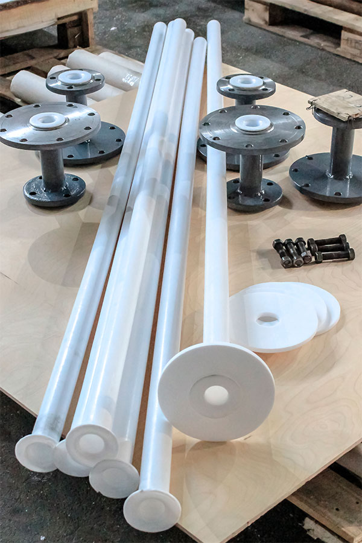

Фторопластовые сифоны изготавливаются из толстостенных фторопластовых труб любых диаметров и длин, устойчивы в широком интервале температур, нечувствительны к воздействию агрессивных сред, отличаются прочностью, относительной гибкостью, легкостью, безопасностью и эргономичностью использования, низкой ценой. Фторопластовый сифон легко и просто устанавливается на аппарат или меняется на новый.
ООО «СВС» приглашает к сотрудничеству в сфере поставок сифонов фторопластовых для любых технологических емкостей, реакторов и аппаратуры с комплектом уплотнительных колец, крепежа и переходников из фторопласта.